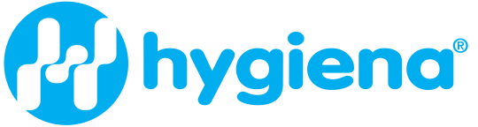
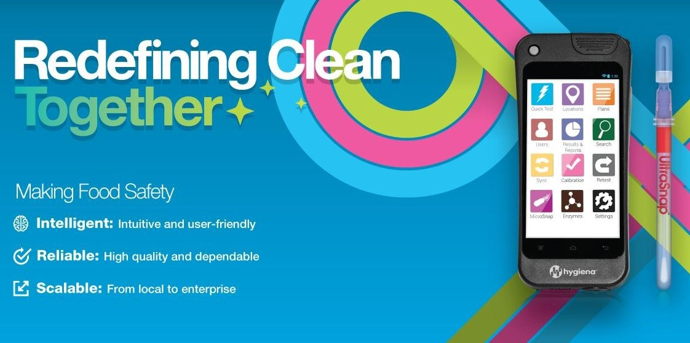
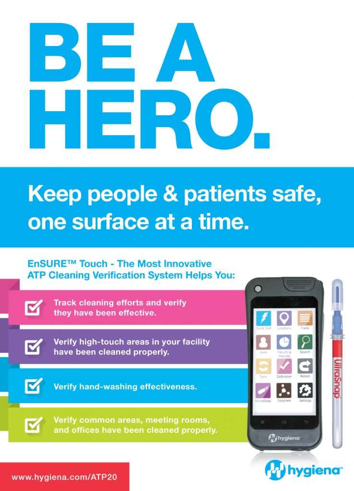
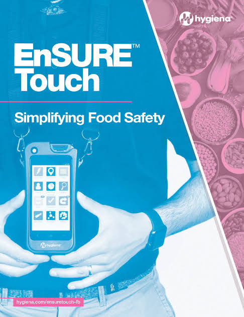

Founding Marketing & Product Hire
Repositioning an Underdog
Hygiena's products were built on technology that beat competitors in independent comparisons, yet weak positioning meant the company mostly won business on price. As a science-led company, it often launched products because the science was possible, not because the market had asked for them, putting years of R&D and launch investment behind ideas that had never been tested with customers.
What I Did
Built the First Customer Study
I built Hygiena's first voice of customer program and led a team in surveying more than 1,600 customers. It surfaced hard truths about the business, the products and how customers saw them, and set off a ripple of change across the organization. I learned why customers chose Hygiena (and why they didn't), what they valued and what they didn't care about, and where the company was falling short. The findings shaped company strategy for years and replaced assumptions with a culture of curiosity.
Brought In Expert Voices
Each year I helped host a summit with industry experts to discover where the industry and its regulations were heading, and widen the company's vision beyond current customers.
Mapped the Customer Journey
I ran multi-day workshops where product, operations, sales, marketing, technology and science departments walked through real customers' stories of finding and working with Hygiena. Every website visit, call, email, download and frustration went on the wall. The room was stunned. The exercise mattered even more after acquisitions merged teams: it showed exactly where the company was dropping the ball, and how that felt to the people it served.
Sold Value, Not Price
Before the research, sales and marketing spent their time on the wrong customers and led with the wrong benefits. My research revealed the opportunities that made the most sense for the business. I refocused sales and marketing on the audiences most likely to buy, with a message built around what they actually wanted.
Launched EnSURE Touch
This was the moment Hygiena stepped out of the shadows, and the culmination of my work. The flagship caught the attention of all the right people and set the industry talking: an iPhone moment in a field where innovation was rarely part of the conversation. Every digital, physical and experiential piece of the launch grew out of user research, from the photography, launch videos and brochures to the "Be a Hero" campaign and in-person events. I also developed a co-launch program with a Fortune 500 partner, opening a new channel to large companies Hygiena couldn't reach on its own. The launch materials went on to win an industry award.
Results
In new sales from the launch.
Customers in Hygiena's first voice of customer program.
Net Promoter Score.
More yearly revenue after revamping pricing and packaging.
ARR of the portfolio I led.
Acquisitions.
Headcount growth.
Infection Control Today magazine award for the product launch.
Launch Materials


